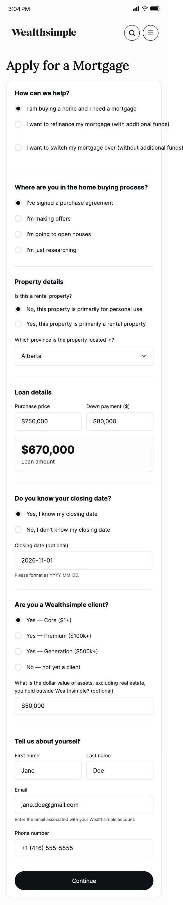
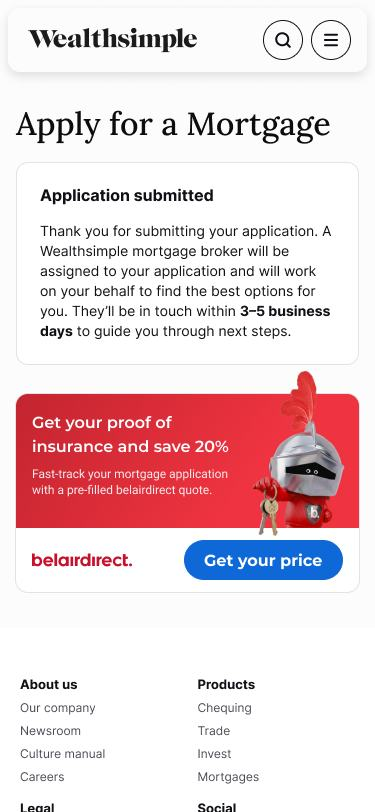
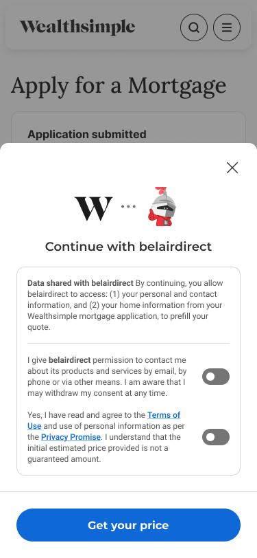
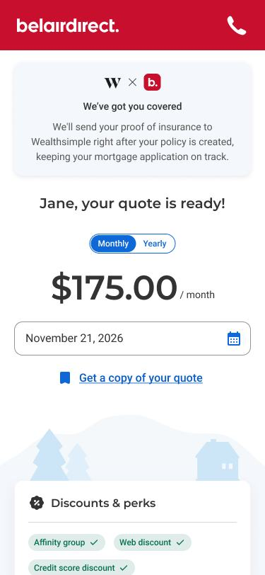
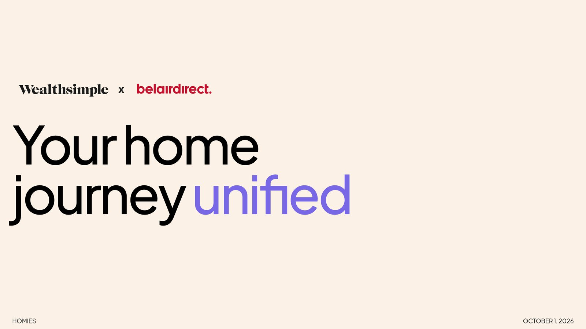
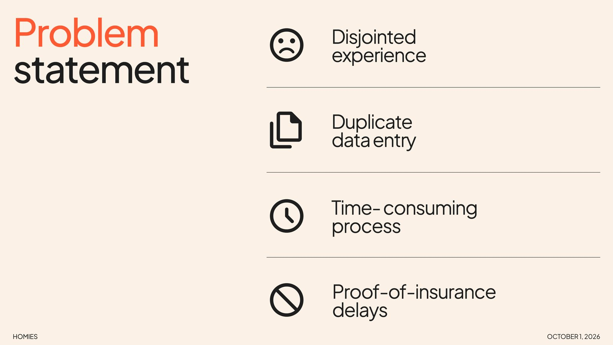

Intact Innovathon 2026
A unified mortgage-to-insurance journey for Wealthsimple × belairdirect. Jury Award winner.
Concept work created for Intact's internal Innovathon challenge. This is not a shipped or in-market Wealthsimple or belairdirect product.
Overview
Buying a home is the exact moment you need home insurance...
Intact's Innovathon gave teams one to two days to pitch a new idea to a jury. Our brief was the partnership between Wealthsimple, where people apply for mortgages, and belairdirect, Intact's direct-to-consumer insurance brand. Home insurance is a growth priority, and every new mortgage is a homebuyer who needs a policy before they can close.
Problem
...but getting a mortgage and getting insured are two separate journeys.
After applying for a mortgage, homebuyers leave Wealthsimple, find an insurer, and type the same home and personal details in again. Then they have to get proof of insurance back to their lender before closing.
Disjointed experience
Two brands, two flows, no handoff between them.
Duplicate data entry
Address, home details and contact info, entered twice.
Time-consuming process
A long quote form, right in the middle of a stressful purchase.
Proof-of-insurance delays
Mortgages stall while lenders wait for documents.
Today
- Apply for mortgage
- Submitted
- Leave Wealthsimple
- Re-enter home & contact details
- Quote
- Send proof back manually
Unified
- Apply for mortgage
- Offer
- Consent
- Pre-filled quote
- Proof sent automatically
The data a homebuyer already gave Wealthsimple is the data belairdirect needs to quote.
Opportunity
Your mortgage application already knows your home.
Everything an insurance quote asks for, like the property, the closing date and who's buying, is already in the mortgage application. If the two brands could share it with the buyer's consent, insurance would stop being a second chore and become the next step.
No re-entry
The quote is pre-filled from the mortgage application.
The right moment
The offer arrives just as the buyer needs it.
Closing on time
Proof of insurance goes straight back to Wealthsimple.
My Role
So my role was to make the idea feel real in five minutes.
We were a team of seven, and I was the motion designer. With one to two days, there was no time to explore alternatives, so we committed to a single flow early. My job was to shape how that flow would be experienced and pitched: the brand animation, the loading moment inside the product, and the visual system of the deck the jury saw.
How the team split the work. My part is highlighted.
Solution
One flow, from loan to insurance.
The insurance offer lives inside the Wealthsimple mortgage application. One tap and one consent step later, the homebuyer sees a belairdirect quote that's already filled in.

Apply for a mortgage
The buyer fills in the Wealthsimple application, the only form in the journey.

The offer appears
After submitting, a belairdirect card offers proof of insurance with a pre-filled quote.

Consent to share
A modal spells out exactly what is shared before anything leaves Wealthsimple.

Quote, ready
The quote is ready on arrival, and proof of insurance goes back to Wealthsimple automatically.
Try the flow
A walkthrough of the working prototype. Live prototype ↗ (password on request)
Decisions
Small choices that kept the journey unified.
Trading friction for trust
The fastest flow would skip straight to the quote. We kept an explicit consent step anyway. Sharing data between two brands only feels safe if the buyer can see exactly what's being shared and choose it. That one deliberate pause is what makes the rest of the journey feel effortless instead of invasive.
Motion x Product
Motion made a concept feel like a product.
A jury sees a hackathon idea for a few minutes. Motion was how we made a one-day prototype feel considered, branded and real.
Brand animation
The title animation opens the pitch, bringing the two brands together and landing on "unified" before anyone says a word.
3D mascot loader
I animated belairdirect's knight in 3D as the loader while the quote is prepared. A wait becomes a branded moment, and the buyer can tell they've moved into belairdirect's world without leaving Wealthsimple's flow.


Deck visual system
A warm cream ground, purple for "unified", orange for problems, and oversized type. Each slide makes one point, so the jury always knew where they were in the story.
Reflection
What I learned
The project won the Innovathon's Jury Award.
Motion is a product tool, not decoration.
The loader and the brand animation did real work. They told the buyer where they were and told the jury the idea was shippable.
Constraints force commitment.
With one to two days and no room to explore, the win came from picking one flow and telling it well.
Next, the same pre-filled pattern could plug into home-shopping sites earlier in the funnel and extend to car loans and car insurance.